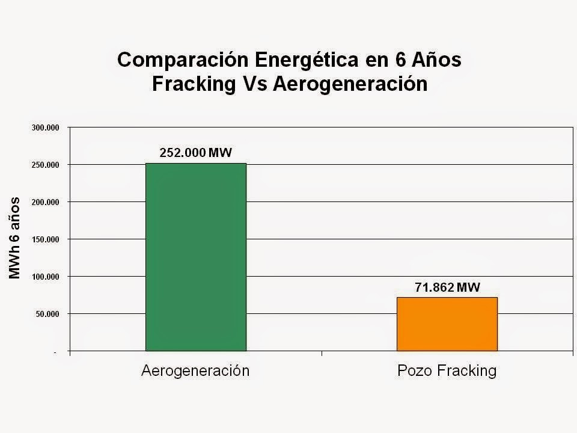

La controversia del fracking
El debate sobre el fracking no solo involucra cuestiones ambientales, sino también intereses económicos y políticos. Mientras las compañías de gas y petróleo presionan para expandir su uso, comunidades, investigadores y gobiernos alertan sobre los daños irreparables que conlleva. Estudios documentan impactos como contaminación del agua, emisión de gases de efecto invernadero y sismicidad inducida, elementos que desafían la capacidad de los gobiernos para implementar regulaciones efectivas.
Impactos ambientales documentados
El fracking requiere millones de litros de agua por pozo, lo que agota recursos hídricos y los contamina con sustancias tóxicas. El agua utilizada, que a menudo incluye químicos no divulgados, queda fuera del ciclo hidrológico, agravando el estrés hídrico en regiones vulnerables. Además, el transporte de materiales y desechos genera contaminación adicional. A pesar de las promesas de reciclaje del agua usada, los tratamientos actuales son insuficientes para eliminar su toxicidad.
Un dilema energético y ambiental
Los defensores del fracking argumentan que ofrece una alternativa para reducir la dependencia del carbón y garantizar la independencia energética. Sin embargo, investigaciones sugieren que las fugas de metano podrían anular estos beneficios al intensificar el calentamiento global. En países como Colombia, se está discutiendo sobre la prohibición del fracking, para garantizar el futuro ambiental del país. El proyecto fue aprobado por el Senado de la República en segundo debate, pero aun se encuentra en discusión.
En conclusión, el fracking representa un dilema global, una tecnología que ofrece promesas económicas a corto plazo pero que podría causar daños irreversibles al planeta y la salud humana. Los gobiernos enfrentan el desafío de priorizar políticas basadas en datos científicos, regulaciones estrictas y una transición hacia energías limpias. El debate no solo es técnico, sino ético: ¿debemos seguir invirtiendo en combustibles fósiles cuando las alternativas renovables están listas para su desarrollo?